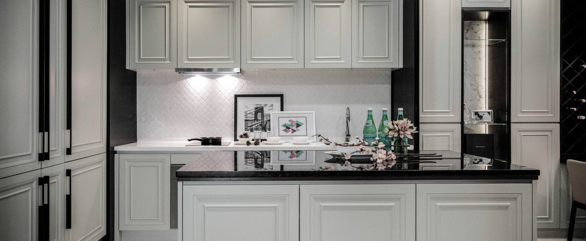

<!DOCTYPE html>
<html>
<head>
<title>History</title>
<meta name="viewport" content="width=device-width, initial-scale=1">
<link rel="stylesheet" type="text/css" href="css/history.css">
<link rel="stylesheet" type="text/css" href="css/style.css">

</head>
<body>
<br>

<table align="center">
<tr>
<td></td>
<td><a href="index.html"></a></td>
<td><div class="dropdown">
      <button class="dropbtn"><a href="aboutus.html"></a>
           <i class="fa fa-caret-down"></i>
      </button>
                   <div class="dropdown-content">
                   <a href="history.html">History</a>
                   <a href="visionmission.html">Vision & Mission</a>
                   <a href="organizationalchart.html">Organizational Chart</a>
              </div>
<td><a href="materials.html"></a></td>
<td><a href="products.html"></a></td>
<td><a href="promotions.html"></a></td>
<td><a href="gallery.html"></a></td>
<td><a href="contactus.html"></a></td>
</tr>
</table>
<br>

<br>

<div class="container">
 
 <div class="centered"><font size="10">HISTORY</font></div>
</div>

<br>
<center>
<font size="8" color="brown" face="gothic">History</font>
<font color="white"><h3>19 APRIL 2018</h3></font>
<font color="white"><p>Started company offering modern custom kitchen cabinet service. Participated by only three members including founder of company. Location : 1 shoplot at Seri Iskandar.</p></font>


<font color="white"><h3>1 JUN 2019</h3></font>
<font color="white"><p>Company expended by providing interior design and consultation services. Started of provide variety of custom cabinet such as wardbore, wall partition, shoe rack, wainscoting and other interior design services. Staff members expended to six member. One shoplot turn into two unit of workspace, a mini showroom and office.</p></font>


<font color="white"><h3>1 JANUARY 2020</h3></font>
<font color="white"><p>YL Furniture move from shop lot unit to a mini factory at Siputeh, Batu Gajah. Sales margin in 2020 increase more than 100 percent from 2019. Staff member are expanding to 12 staff. New machine was upgraded to help manufacturing line fulfill the request from client. YL Furniture become more systematic and proper. Variety of new material, design and services are added such as introducing aluminium and material as a one of the choice for customer to choose. Recently in year 2021, YL Furniture have a showroom, office and mini factory. Its all begin with only three members of the company</p></font>

</center>


</body>
</html>